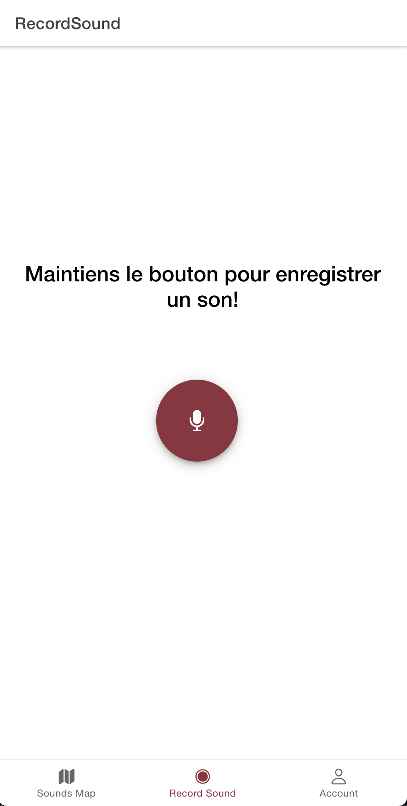
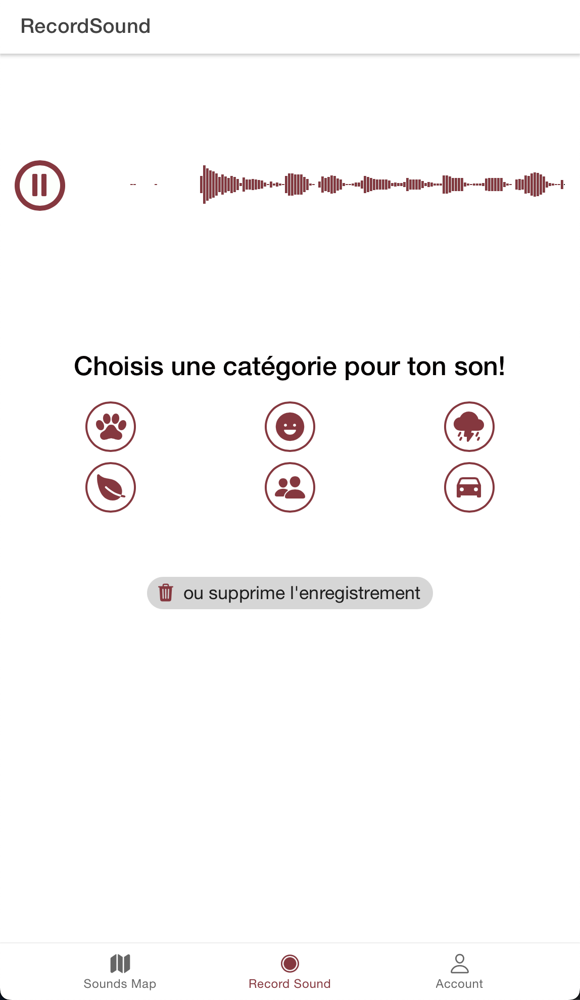
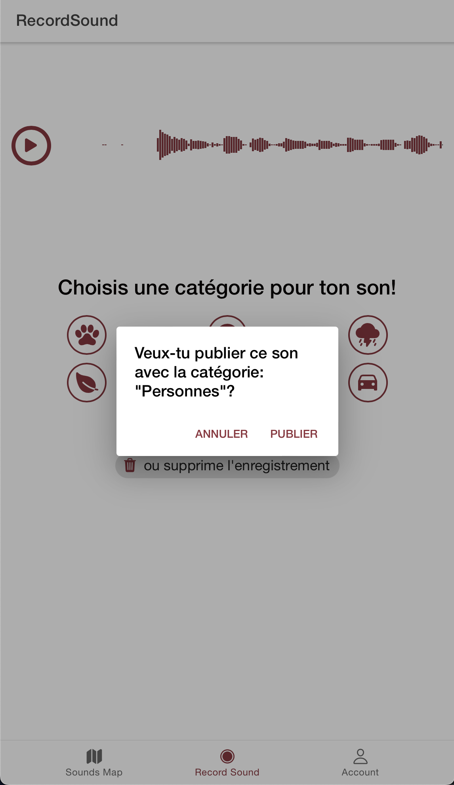
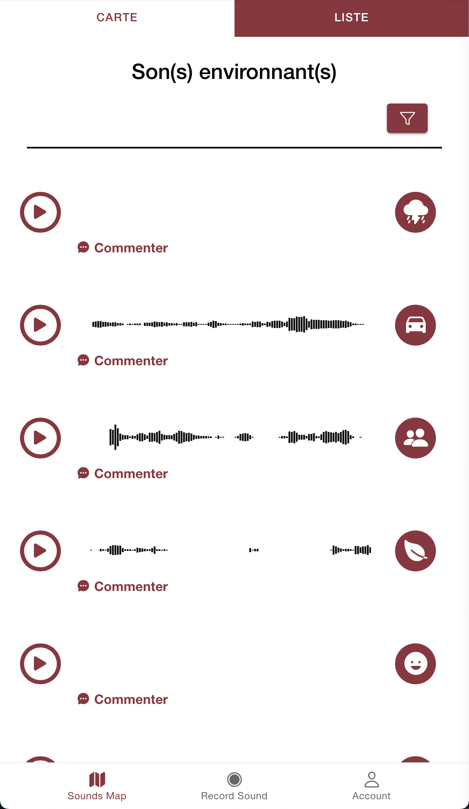
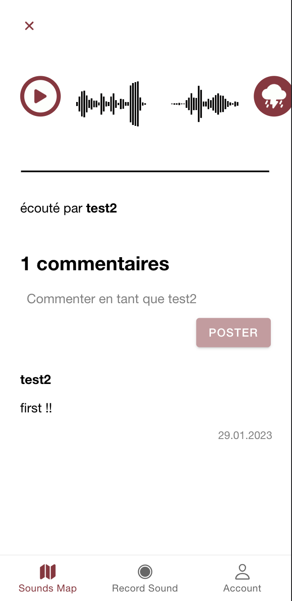

Page de connexion/inscription
Cette page permet de se connecter ou de créer un compte afin de pouvoir utiliser l'app
Enregistrement et publication du son
Vous entendez un son qui vous plait ou qui vous fait rire?
Enregistrez-le en restant appuyé sur le bouton du centre
Enregistrement et publication du son
Choisissez la catégorie de votre son
Enregistrement et publication du son
Si vous êtes satisfait, publiez-le pour la partager avec la communauté!
Découverte
Vous voulez découvrir les sons autour de vous?
Vous pouvez les découvrir sur la map en choisissant les paramètres qui vous intéressent (distance, catégorie)
Découverte
Ou sous la forme d'une liste
Page du son
Vous avez la possibilité d'écrire un commentaire sur le son et de découvrir les autres commentaires
Page de profil
Vous pouvez réécouter vos sons enregistrés sur votre profil et changez vos paramètres de profil
Page de profil
Ainsi que de découvrir le profil d'autres utilisateurs